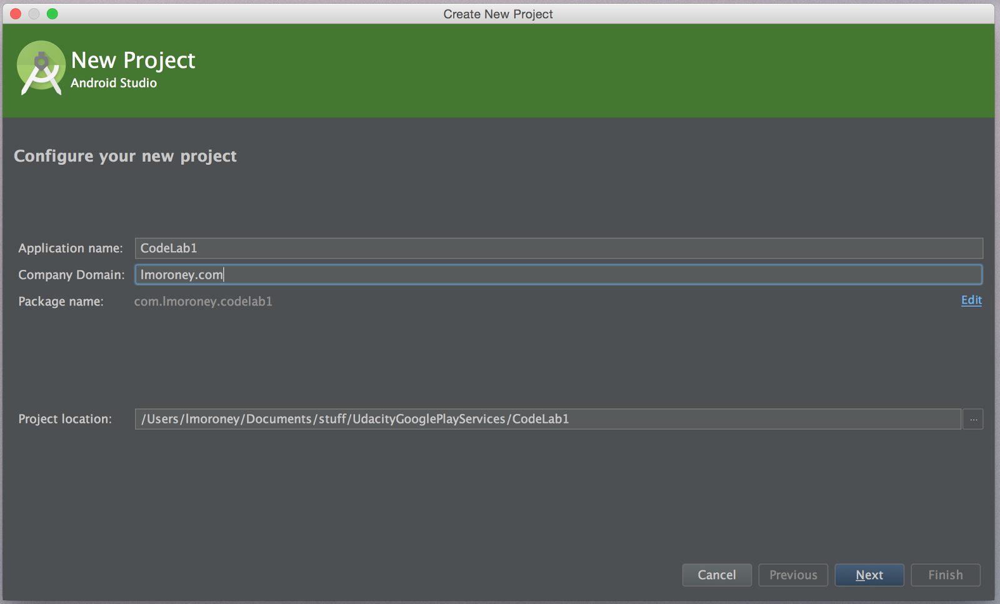
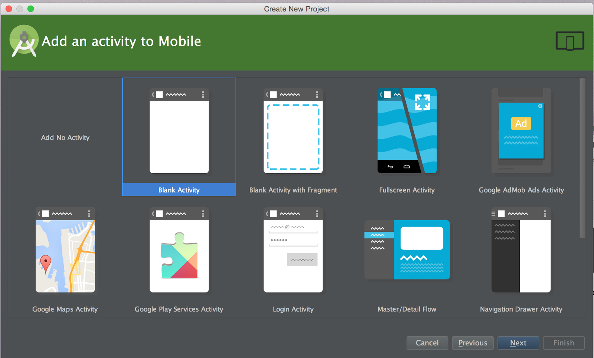
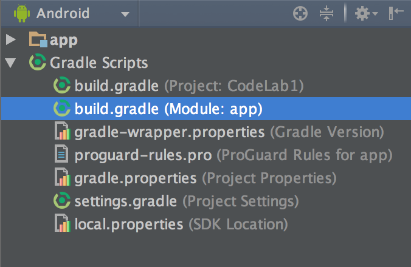
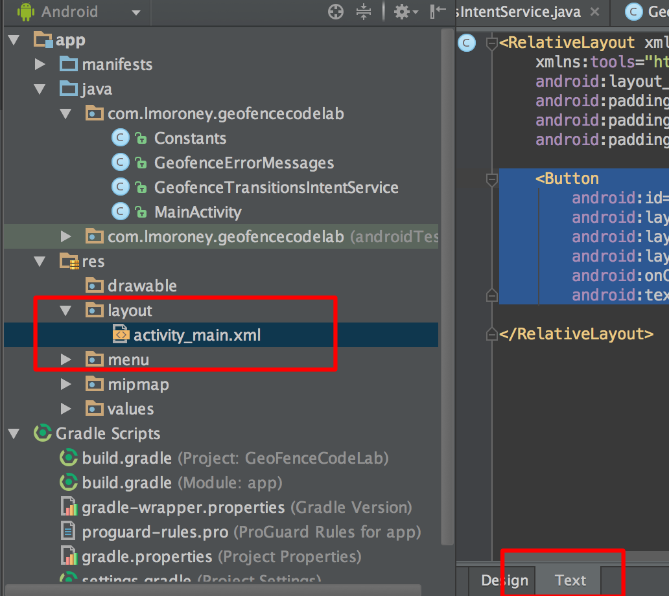
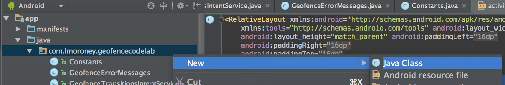

You’ve probably learned how to use the GPS on your device to get the location of the device. Maybe you’ve played with the FusedLocationProvider which smartly uses the GPS along with other sensors to get your current location. How about we take it to the next level? How about an app that tells you when you enter or leave a specific location? You could use this for social check ins, or maybe as a parent you can use this to tell when your kids get home? I’ve seen games that use this too -- where they virtually hide loot, and when you go to the real world location, your device knows, and can react.
A great and easy way to implement this is using a geofence. Simply, a geofence is a location in latitude and longitude, a radius around that location, and a time for which it is active. So, for example, you could put the latitude and longitude of your loot stash, a radius of say 10 meters, and data that it’s only active on weekends. The Location APIs will take this, and when you exit or enter that space, can be used to generate a notification. It’s up to you as a developer how you handle this!
Sound exciting? I think so -- so let’s dive in and learn how it works.
Before beginning, check that you have all the necessary pre-requisites. These include:
- Android Studio
- An Android device that runs Android 4.2.2 or later -or- A configured Android emulator (this is available in Android Studio). However in order to test entering and leaving a GeoFence, you’ll need a real device that you can move around!
- The latest version of the Android SDK including the SDK tools component. You can get this from the Android SDK Manager in Android Studio.
- The Google Play Services SDK. You can get this from the Android SDK Manager in Android Studio.
In this step you’ll create the boilerplate app that you’ll finish later by adding the sign-in code.
Create the new App
Start Android Studio by clicking on its icon in the launcher bar at the bottom of the screen.
When you launch Android Studio, you’ll see an option to ‘Start a new Android Studio project’. Select this. You’ll see the ‘New Project’ dialog. Enter the details for your app.

Press Next, and you’ll get a screen asking to ‘Target Android Devices’. Be sure to choose a minimum of API 19: Android 4.4 (KitKat) for Phone and Tablet.
You’ll see ‘Add an activity to Mobile’ dialog. Ensure that you select ‘Blank Activity’ here.

Click ‘Next’ and you’ll be asked to customize the Activity. Just accept the defaults, and press ‘Finish’.
Configure build.gradle and AndroidManifest.xml
In this step you’ll ensure that your app can use Google Play services, in which the APIs for signin reside. To do this, you’ll first update your build.gradle file. In Android Studio, open the Gradle Scripts folder [see screenshot below], and select build.gradle (Module App) as shown:

This will open your build.gradle file, at the bottom of which will be code like this:
We need to add Google Play Services, so add an additional dependency, as below:
If you are asked to perform a gradle sync, do so. Otherwise, find the Gradle Sync button on the toolbar and press it to trigger a sync.
It looks like this:

Now find your AndroidManifest.xml, and add the following code just above the closing </activity> tag.
Android Studio will change the contents of the value to something else. That’s perfectly natural, and a sign that things are working well. If the google_play_services_version goes red, make sure you've hit Gradle Sync.
Finally, add the following lines at the bottom, just before the closing </manifest>:
Editing your Layout File
In this case you’ll have a very simple layout that has a single button that adds a list of geofences for you to monitor. The app will then send you a notification whenever you enter, or leave, one of these geofences.
Go to res/layouts/activity_main.xml.
Make sure that in Android Studio you have it opened in Text view, where you can inspect the XML markup that defines the layout.

You’ll see that it’s a basic ‘hello world’ UI, with a TextView containing ‘Hello World’ that looks like this:
Delete this and replace it with a Button:
Note that it’s best practice not to hardcode the text ‘Add GeoFences’ into this XML, but instead to externalize it in a strings.xml file. I’ve just hardcoded it here for brevity.
Save and close your layout file. In the next step you’ll write the code behind this layout!
Now that you’ve created the project in Android studio, and configured the gradle, manifest and layout files, you’re ready to begin coding. We’ll go through it step by step so you understand everything that’s going on.
Clean up your Main Activity
The single activity template that you used created an app with an ActionBar at the top, which requires onCreateOptionsMenu and onOptionsItemSelected methods to be overridden. If you look at your Main activity, you’ll see this code. We don’t need this in this app, so let’s clean it up.
- Delete the
onCreateOptionsMenumethod - Delete the
onOptionsItemSelectedmethod - Change the class declaration to remove
extends ActionBarActivity and addextends Activity - Import
android.app.Activity - Remove unused imports.
When you’re done, your activity should look like this (except for the package name):
Extend your Class for Google Play services
Your MainActivity class extends Activity, making it an activity, but it will also need to implement a number of interfaces in order to take advantage of Google Play services asynchronicity.
Update your MainActivity class declaration to:
If using Android Studio, this will also prompt you for the appropriate imports. For reference they’re here:
Add Class Variables
There are a few variables that need to be accessed by the entire class. They are the list of geofences we want to monitor, the GoogleAPIClient that is used to communicate with Google Play Services and the representation of the button you created in the layout.
Add the following to your class, just below its declaration, and before the onCreate:
Initializing in onCreate.
In your onCreate function you’ll initialize the variables you created above. The geofence list will be initialized and populated, the GoogleApiClient will be set up, and the button wired up to its declaration in the layout.
Update your onCreate so that it looks like this:
You’ll notice that it uses a helper function (populateGeofenceList) to set up the Geofences, and another (buildGoogleApiClient) to set up your GoogleApiClient. You’ll build them in the next couple of steps.
Populating the list of Geofences
Create a new java class in your project, by right clicking on the package name, selecting ‘New’ and then selecting ‘Java Class’ as shown:

Call the new class Constants.java. Update its content to match the following, changing only the package name to suit your project. This defines a HashMap of locations, each with a key that is a string with the friendly name of the location, and a LatLng (Latitude and Longitude) for the location.
A Geofence can be thought of as a location, with a radius around it, and a time of expiration. When the geofence is active, anything detected within the radius distance of the location, either entering or exiting the area, can trigger a notification. This can be in perpetuity, or for a limited time. In this example, we’re specifying a 20 meter radius, with a 12 hour expiration time.
In this example, I’ve hardcoded several locations for a Geofence -- you don’t need to do this, of course, and can have a more dynamic layout by serving up the list of geofences from a service call, for example:
Now that the list of GeoFences is defined, along with an expiration time and a radius, write the function in MainActivity.java that loads them.
Here’s the code:
This iterates through the HashMap that was set up in Constants.java, and for each entry, creates a new Geofence using a Geofence.Builder. The parameters passed to this are the ID -- which is the key on the HashMap (e.g. “JapanTown”), a circular region that defines the Geofence, containing a latitude and logitude of the center of the region, and a radius that defines a circle around that center. It then defines the expiration duration (which can be 0 for never, check the docs), and a transition type that triggers an alert. This can be entering the fence, exiting the fence or both. In this case you can see that it’s both.
Building the Api Client
When you set up the onCreate, you called a method buildApiClient() that hadn’t been written yet. You’ll do that in this step.
As mentioned earlier, the Google Api Client is the main entry point to Google Play services. To create one, you need to specify a number of things:
- Location of Connection Callbacks. The Google Api Client is highly asynchronous in nature, and needs functions implemented somewhere that it calls when it’s connected (
onConnected) and when the connection is suspended (onConnectionSuspended). In this lab you’ll code these in this activity, so you set the location for the connection callbacks to this. - Location of Connection Failed callback. It also needs you to specify the location of the
onConnectionFailedfunction which runs if there’s a failure in the connection - The APIs that you want to use. Google Play services supports lots of APIs, so you specify which ones you want to connect to here. For Geofencing you use the Location APIs.
Here’s the code:
This uses a GoogleApiClient builder, setting the callback container to ‘this’, and specifying that you want Location services. The result is assigned to mGoogleApiClient, which you defined earlier as a class variable.
If you’ve gotten this far, great, keep going! Not to far to go now. As a quick checkpoint, make sure you have all the correct import statements at the top of your MainActivity.java file. For reference, here’s what you should have:
Implementing Overrides
When using the GoogleApiClient, there are a number of overrides that the various interface you specified that you’d implement, that need to be defined.
The first of these are onStart and onStop. These are called when the Activity is started and stopped by Android respectively. You should use them to connect and disconnect your GoogleApiClient respectively.
Here’s the code:
onConnected fires when you make a connection to the API. For this app, you don’t need to do anything with it, but you still need to provide the override. The same applies to onConectionFailed. In a real app you’d probably want to log the error, or do something user-friendly, but for the purposes of this tutorial, I’ll just leave it blank.
Finally there’s onConnectionSuspended, which fires if something happens to disrupt the connection, but it hasn’t completely dropped. Typically you’d just try to reconnect at this point:
Implementing the Button Handler
In the layout file, when you added the button you specified that it’s onClick would be addGeofencesButtonHandler. This specifies the name of the method to call when the button is pressed. Let’s implement that next.
Pressing the button should, if the GoogleApiClient is connected, add the list of geofences, and configure what should happen when a geofence transition occurs.
To do this you call addGeofences on the Geofencing API, passing it the GoogleApiClient that you are working with, a geofencingrequest object that contains the list of geofences, and a pending intent which is used to generate an intent when the geofence transition occurs. This is documented here.
Here’s the code for the Button Handler.
This uses the return from getGeofencingRequest() to set up the request, and getGerofencePendingIntent() to set up the pending intent. Let’s build these next.
A geoFencingRequest is set up using a builder, to which you configure the initial trigger conditions if any, and add the list of geofences to. It’s documented here.
We’re going to create a geoFencing request with our list of geofences, triggered by initial entry, like this:
The getGeofencePendingIntent() function returns a PendingIntent, which we create from an existing intent. In the next step you’ll create this, but for now, just set it up as follows:
This requires you to build the GeofenceTransitionsIntentService class. You’ll see that in the next step.
Building the Intent Service
A pending intent generates an intent when the transition event occurs. In the last step you created a pending intent from an intent defined by a class called GeofencesTransitionsIntentService, and you’ll add that in this step.
Add a new class to your app called GeofenceTransitionsIntentService. (Right click on the package, select ‘New’, select ‘Java Class’)
First, we should make sure it extends IntentService and handles the incoming Intent correctly. Replace the boilerplate code with this:
This will correctly handle any incoming Intent, but it doesn't do anything else. At the end of onHandleIntent, let's call some hypothetical new methods that get details, and send a notification:
Let's now add these methods on this class. This is long, but fairly straightforward, code to format the GeofenceEvent, and send it as a Notification to your users:
Handling Intents and Errors
When it receives an intent, the onHandleIntent method will run. This pulls the GeofencingEvent from the intent, and get metadata from the event with information such as the list of geofences that triggered the event to happen. (Remember as geofences are circles around a LatLng, they can overlap). It gets the list and uses these to send a notification back to the app.
Now that the service is ready to go, don’t forget that you also need to register it with your app -- and this is done in AndroidManifest.xml. Go to this file, and just before the closing </application> tag, add the following.
<service android:name=".GeofenceTransitionsIntentService" />
You’re almost done -- a little but more housekeeping is needed on your MainActivity before you can try it out.
Catching the onResult callback
You want to ensure that the Geofences have been properly added, and the infrastructure will call you back with a ResultCallback<Status> when this happens. You’ve already implemented this interface, but you need to implement the onResult method in the activity in order to get it to work. This will just set a Toast to let the user know that the Geofences have been added, or allow you to catch an error if they haven’t.
Here’s the code:
You’re now ready to test your application. Set a geofence near you, and enter that into the Constants class. Run the app, and walk around the area, seeing if you can trigger an alert on your phone as you enter or leave it. It’s pretty cool, right?
In this lab you saw how to use a GoogleApiClient to use Location services to generate geofences, and to raise notifications on the phone when it crosses into, or out of, these geo fences! This can be the basis of lots of great applications or games, and hopefully this lab was enough to get you started in building with this fascinating technology.
- Read the developer documentation.
- Learn more about geofencing in the Google Play services online course.
- Install the geofencing sample code.